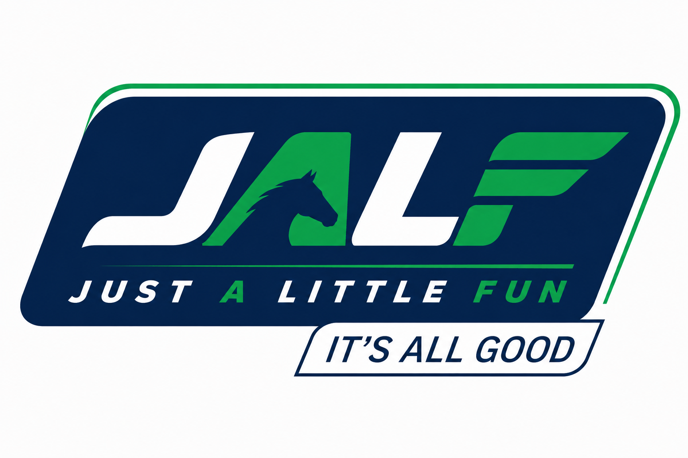

🔊
Post
&
Parlay
JustaLittleFun Racing
Game night at the tote
Race
night
Host a card of races · take the room's bets · crown a champion punter
Start session
Back to game selection
Session
setup
Race card
Race card settings
Number of races
How many races before the final leaderboard
–
5
+
Betting window
Seconds players get to place bets each race
–
90
sec
+
Starting balance
Play money each punter begins with
–
$
200
+
Countries
Which countries' tracks & horses can run — pick one or more
Australia
Japan
Distances
Which trips can come up this session — pick one or more
Sprint
≤1300m
Mile
1300–2000m
Staying
2000m+
Cancel
Confirm
Waiting for
runners
Lobby open
Room code
----
Join at
your-player-url
In the field
0 joined
No punters yet — share the code to fill the field
Races
6
Betting
60s
Balance
$200
Race
All
Start game
Edit settings
Close session
Doomben Downs
Race 4 — 2000m — Good 4
0:30
SLOW MO REPLAY
Race Info
Value
Course
—
Distance
—
Conditions
—
Field
—
Placegetter
Win
Place
Show
Margin
FINISH
AND THEY\'RE OFF
PHOTO FINISH — SLOW MOTION REPLAY
STEWARDS EXAMINING
Final
Results
Again
Main Menu
Champion Punter
🏆
—
Top of the tote
Final balance
$0
Final standings
Close session and return to game selection?
This ends the game for everyone in the room. Players will be disconnected.
Cancel
Close session
